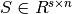
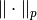
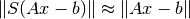
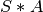
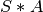
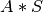
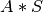
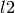
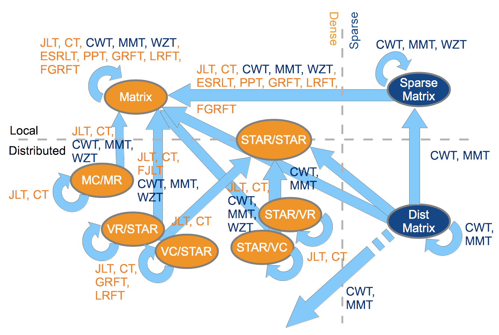

Sketching Layer¶
Introduction¶
‘Sketching’ is the core algorithmic foundation on which libSkylark is built, and is able to deliver faster NLA kernels and ML algorithms.
Dimensionality reduction in NLA and ML is often based on building an oblivious subspace embedding (OSE). An OSE can be thought of as a data-independent random “sketching” matrix  whose approximate isometry properties (with respect to a norm ) over a subspace (e.g., over the column space of a data input matrix A, and regression target vector b) imply that,

which in turn allows the regression coefficients,  , to be optimized
over a “sketched” dataset - namely  and
, to be optimized
over a “sketched” dataset - namely  and  - of much smaller
size without losing solution quality significantly.
Sketching matrices include Gaussian random matrices, structured random matrices
which admit fast matrix multiplication via FFT-like operations, hashing-based
transforms, among others.
- of much smaller
size without losing solution quality significantly.
Sketching matrices include Gaussian random matrices, structured random matrices
which admit fast matrix multiplication via FFT-like operations, hashing-based
transforms, among others.
Overview of High-performance Distributed Sketching Implementation¶
Sketching a matrix A typically amounts to multiplying it by a random matrix
 , i.e.,  for compressing the size of its rows
(row-wise sketching) or
, i.e.,  for compressing the size of its rows
(row-wise sketching) or  for compressing the size of its
columns (column-wise sketching).
for compressing the size of its
columns (column-wise sketching).
In a distributed setting, this matrix-matrix multiplication primitive
(sketching GEMM operation) is special in the sense that any part of matrix
can be constructed without communication.
In addition, depending on the relative sizes of  , and the
sketched matrix (output), we can organize the distributed GEMM so that no part
of the largest-size matrix is communicated (SUMMA approach), thus resulting in
communication savings.
Further optimizing, we can perform local computations over blocks of ,
, and also assume transposed views of the operands for memory and
cache use efficiency.
, and the
sketched matrix (output), we can organize the distributed GEMM so that no part
of the largest-size matrix is communicated (SUMMA approach), thus resulting in
communication savings.
Further optimizing, we can perform local computations over blocks of ,
, and also assume transposed views of the operands for memory and
cache use efficiency.
In particular when both and are distributed dense matrices
we represent them as Elemental matrices and support sketching over a rich set
of combinations of vector and matrix-oriented data distributions: in vector
distributions different processes own complete rows of columns of the matrix
that are p apart (p is the number of processes) while in matrix distributions
each process owns a strided view of the matrix with strides along rows and
columns being equal to the dimensions of the process grid.
In our sketching GEMM, local entries of the random matrix S are computed
independently by indexing into a global stream of random values provided by a
counter-based Parallel random number generator (supplied by
Random123 library).
No entries of are communicated since they can be locally generated
instead.
can be squarish (aka “matrix”) or tall-and-thin or short-and-fat
(aka “panel”).
In multiplying with , matrix-panel, panel-matrix, inner-panel-panel
or outer-panel-panel products may arise.
We provide separate implementations for these cases organized around the
principle of communication-avoidance for the largest of the matrix terms
involved in the GEMM, for each of the input/output matrix-data distribution
combinations.
The user can optionally set the relative sizes that differentiate between these
cases.
Local entries can be incrementally realized in a distribution format that
best matches the matrix indices of the local GEMM operation that follows
it.
Resulting blocks typically traverse the smallest of matrix sizes in
increments that can optionally be specified by the user.
This has the extra benefit of minimizing the communication volume of a
collective operation that generally follows this local GEMM - essentially to
compensate for the stride-indexed matrix entries in the factors.
As an example we provide a pseudocode snippet (in Python syntax) that describes
the rowwise sketching of a squarish input matrix , initially distributed
across the process grid in [MC, MR] format (please refer
here for a
comprehensive documentation of distribution formats, here appearing in brackets):
is first realized (its random entries are actually computed in the desired
distribution format - in embarrassingly parallel mode) and then the local parts of
and are multiplied together. Finally collective communications within
subsets of the process grid take place to produce the resulting sketched matrix
(C[MC, MR]). The corresponding C++ code (allowing also for incremental realization of
) can be found in
libskylark/sketch/dense_transform_Elemental_mc_mr.hpp.
def matrix_panel(A[MC, MR], S):
S[MR, STAR] = realize(S)
C_hat[MC, STAR] = local_gemm(A[MC, MR], S[MR, STAR])
C[MC, MR] = reduce_scatter_within_process_rows(C_hat[MC, STAR))
return C[MC, MR]
Quite interestingly and depending on the distribution format of the input and sketched matrices, sketching can be communication free. The following snippet illustrates this remark when both input and sketched matrices are in [VC, STAR] or [VR, STAR] distribution formats - same scenario as before, rowwise sketching of a squarish input matrix:
def matrix_panel(A[VC/VR, STAR], S):
S[STAR, STAR] = realize(S)
C[VC/VR, STAR] = local_gemm(A[VC/VR, STAR], S[STAR, STAR])
return C[VC/VR, STAR]
Sparse matrices are currently represented as
CombBLAS matrices.
As for dense sketch matrices, any part of the sparse sketch matrix can be
realized without communication. Since the sketch matrix is sparse, we only
require a “sparse” realization of the sketch matrix and the sketching
GEMM can be computed on the random stream directly.
Similar to the SUMMA approach for dense matrices we select what will be
communicated depending on input and output dimensions.
It is possible to sketch from a sparse matrix to a dense (and vice versa). The only restriction when using CombBLAS is that total number of processors has to be a square number.
libSkylark’s Sketching Layer¶
The purpose of the sketching layer is to provide optimized implementations of various sketching transforms and for various matrix arrangement in memory (e.g. local matrices, distributed matrices, sparse matrices ...). The majority of the sketching library is implemented in C++, but it is accessible in Python through skylark.sketch.
Sketching Transforms¶
The following table lists the sketching transforms currently provided by LibSkylark.
These transforms are appropriate for specific downstream tasks, e.g.
-regression,  -regression, or kernel methods.
-regression, or kernel methods.
The implementations are provided under libskylark/sketch.
| Abbreviation | Name | Reference |
|---|---|---|
| JLT | Johnson-Lindenstrauss Transform | Johnson and Lindenstrauss, 1984 |
| FJLT | Fast Johnson-Lindenstrauss Transform | Ailon and Chazelle, 2009 |
| CT | Cauchy Transform | Sohler and Woodruff, 2011 |
| MMT | Meng-Mahoney Transform | Meng and Mahoney, 2013 |
| CWT | Clarkson-Woodruff Transform | Clarkson and Woodruff, 2013 |
| WZT | Woodruff-Zhang Transform | Woodruff and Zhang, 2013 |
| PPT | Pahm-Pagh Transform | Pahm and Pagh, 2013 |
| ESRLT | Random Laplace Transform (Exp-semigroup) | Yang et al, 2014 |
| LRFT | Laplacian Random Fourier Transform | Rahimi and Recht, 2007 |
| GRFT | Gaussian Random Fourier Transform | Rahimi and Recht, 2007 |
| FGRFT | Fast Gaussian Random Fourier Transform | Le, Sarlos and Smola, 2013 |
Sketching Layer in C++¶
The above sketch transforms can be instantiated for various combinations of distributed and local, sparse and dense input matrices and output sketches. The following table lists the input-output combinations currently implemented in the C++ sketching layer.
In the table below, LocalDense refers to Elemental sequential matrix type, while STAR/STAR, VR/STAR, VC/STAR, STAR/VR, STAR/VC, MC/MR refer to specializations of Elemental distributed matrices. Each specialization involves choosing a sensical pairing of distributions for the rows and columns of the matrix: * CIRC : Only give the data to a single process * STAR : Give the data to every process * MC : Distribute round-robin within each column of the 2D process grid (M atrix C olumn) * MR : Distribute round-robin within each row of the 2D process grid (M atrix R ow) * VC : Distribute round-robin within a column-major ordering of the entire 2D process grid (V ector C olumn) * VR : Distribute round-robin within a row-major ordering of the entire 2D process grid (V ector R ow)
LocalSparse refers to a libSkylark-provided class for representing local sparse matrices, while DistSparse refers to CombBLAS sparse matrices.
 Schematic views of input and output types for various sketch transforms.
The blue color marks sparse matrix or
transforms, orange is used for dense matrix or
transforms.
Schematic views of input and output types for various sketch transforms.
The blue color marks sparse matrix or
transforms, orange is used for dense matrix or
transforms.Note
In the near future the local dense matrix will be replaced by CIRC/CIRC and STAR/STAR matrices.
Sketching Transforms¶
- type class skylark::sketch::sketch_transform_t<InputMatrixType, OutputMatrixType>¶
Query dimensions
- int get_N() const¶
Get input dimension.
- int get_S() const¶
Get output dimension.
Sketch application
- void apply(const InputMatrixType& A, OutputMatrixType& sketch_of_A, columnwise_tag dimension) const¶
Apply the sketch transform in column dimension.
- void apply(const InputMatrixType& A, OutputMatrixType& sketch_of_A, rowwise_tag dimension) const¶
Apply the sketch transform in row dimension.
Serialization
- boost::property_tree::ptree to_ptree() const¶
Serialize the sketch transform to a ptree structure.
- static sketch_transform_t* from_ptree(const boost::property_tree::ptree& pt)¶
Load a sketch transform from a ptree structure.
Accessors
- const sketch_transform_data_t* get_data()¶
Get the underlaying transform data.
The sketch transformation class is coupled to a data class that is responsible to initialize and provide a lazy view on the random data required when applying the sketch transform.
The sketching direction is specified using the following types:
Using the C++ Sketching layer¶
To get a flavour of using the sketching layer, we provide a C++ code snippet here where an Elemental 1D-distributed matrix is sketched to reduce the column dimensionality (number of rows). The sketched matrix – the output of the sketching operation – is a local matrix. The sketching is done using Johnson-Lindenstrauss (JLT) transform.
#include <elemental.hpp>
#include <skylark.hpp>
...
/* Local Matrix Type */
typedef elem::Matrix<double> MatrixType;
/* Row distributed Matrix Type */
typedef elem::DistMatrix<double, elem::VC, elem::STAR> DistMatrixType;
/* Initialize libSkylark context with a seed */
skylark::base::context_t context (12345);
/* Row distributed Elemental Matrix A of size N x M */
elem::DistMatrix<double, elem::VR, elem::STAR> A(grid);
elem::Uniform (A, N, M);
/* Create the Johnson-Lindenstrauss Sketch object to map R^N to R^S*/
skys::JLT_t<DistMatrixType, MatrixType> JLT (N,S, context);
/* Create space for the sketched matrix with number of rows compressed to S */
MatrixType sketch_A(S, M);
/* Apply the sketch. We call this columnwise sketching since the column dimensionality is reduced. */
JLT.apply (A, sketch_A, skys::columnwise_tag());
Python Sketching Interface¶
Skylark also provides pure Python implementations of the various transforms, which it will default in case the C++ layers of Skylark are not compiled. Some transforms are currently implemented only in Python, but there are plans to implement them in C++ as well. Likewise, some transforms currently implemented in the C++ layer will be extended to Python in near-term releases.
Skylark uses external libraries to represent distributed matrices. For dense distributed matrices it uses Elemental. Currently it uses the c-types interface of Elemental, so be sure install that as well. For sparse distributed matrices it uses CombBLAS interfaced through KDT.
The lower layers use MPI so it is advisable an MPI interface to Python be installed. One option is to use mpi4py.
The following table lists currently supported sketching transforms available through Python.
 Schematic views of input and output types for various sketch transforms. The blue color marks sparse matrix or transforms, orange is used for dense matrix or transforms.{kind=link}
Note
In the near future the local dense matrix will be replaced by CIRC/CIRC and STAR/STAR matrices.
Using the Python interface¶
Skylark is automatically initialized with a random seed when you import sketch. However, you can reinitialize it to a specific seed by calling initialize. While not required, you can finalize the library using finalize. However, note that that will not cause allocated objects (e.g. sketch transforms) to be freed. They are freed by the garbage collector when detected as garbage (no references).
- skylark.sketch.initialize(seed=-1)¶
Reinitalize the library with a seed. If seed is -1 then system time is used to create the seed.
- skylark.sketch.finalize()¶
Finalize (de-allocate) the library. However, note that that will not cause allocated objects (e.g. sketch transforms) to be freed. They are freed by the garbage collector when detected as garbage (no references).
Python sketch classes inherit from the SketchTransform class.
- class skylark.sketch._SketchTransform(ttype, n, s, defouttype=None, forceppy=False, sketch_transform=None)¶
A sketching transform - in very general terms - is a dimensionality-reducing map from R^n to R^s which preserves key structural properties.
_SketchTransform is base class sketch transforms. The various sketch transforms derive from this class and as such it defines a common interface. Derived classes can have different constructors. The class is not meant
- __mul__(A)¶
Allocate space for SA and apply the transform columnwise to A writing the result to SA and returning it.
Parameters: A – Input matrix. Returns: the result of applying the transform to A columnwise.
- __div__(A)¶
Allocate space for SA and apply the transform rowwise to A writing the result to SA and returning it.
Parameters: A – Input matrix. Returns: the result of applying the transform to A rowwise.
- apply(A, SA, dim=0)¶
Apply the transform on A along dimension dim and write result in SA. Note: for rowwise (aka right) sketching A is mapped to A S^T.
Parameters: - A – Input matrix.
- SA – Ouptut matrix. If “None” then the output will be allocated.
- dim – Dimension to apply along. 0 - columnwise, 1 - rowwise. or can use “columnwise”/”rowwise”, “left”/”right” default is columnwise
Returns: SA
- getindim()¶
Get size of input.
- getsketchdim()¶
Get dimension of sketched output.
- serialize()¶
Returns a dictionary that is the sketch in a serialized for. That is, the sketch object can be reconstructed using the deserialize_sketch function.
Specific python sketch classes are documented below.
- class skylark.sketch.JLT(n, s, defouttype=None, forceppy=False, sketch_transform=None)¶
The classic Johnson-Lindenstrauss dense sketching using Gaussian Random maps.
Parameters: - n – Number of dimensions in input vectors.
- s – Number of dimensions in output vectors.
- defouttype – Default output type when using the * and / operators.
- forceppy – whether to force a pure python implementation
Examples
Let us bring skylark and other relevant Python packages into our environment. Here we demonstrate a non-distributed usage implemented using numpy arrays. See section on working with distributed dense and sparse matrices.
>>> import skylark, skylark.utilities, skylark.sketch >>> import scipy >>> import numpy.random >>> import matplotlib.pyplot as plt
Let us generate some data, e.g., a data matrix whose entries are sampled uniformly from the interval [-1, +1].
>>> n = 300 >>> d = 1000 >>> A = numpy.random.uniform(-1.0,1.0, (n,d))
Create a sketch operator corresponding to JLT sketching from d = 1000 to s = 100.
>>> s = 100 >>> S = skylark.sketch.JLT(d, s)
Let us sketch A row-wise:
>>> B = S / A
Let us compute norms of the row-vectors before and after sketching.
>>> norms_A = skylark.utilities.norms(A) >>> norms_B = skylark.utilities.norms(B)
Plot the histogram of distortions (ratio of norms for original to sketched vectors).
>>> distortions = scipy.ravel(norms_A/norms_B) >>> plt.hist(distortions,10) >>> plt.show()
- class skylark.sketch.FJLT(n, s, defouttype=None, forceppy=False, sketch_transform=None)¶
Fast Johnson-Lindenstrauss Transform
Alternative class name: FastJLT
Parameters: - n – Number of dimensions in input vectors.
- s – Number of dimensions in output vectors.
- defouttype – Default output type when using the * and / operators.
- forceppy – whether to force a pure python implementation
N. Ailon and B. Chazelle, The Fast Johnson-Lindenstrauss Transform and Approximate Nearest Neighbors, SIAM Journal on Computing 39 (1), pg. 302-322
- class skylark.sketch.SJLT(n, s, density=0.3333333333333333, defouttype=None, forceppy=False)¶
Sparse Johnson-Lindenstrauss Transform
Alternative name: SparseJLT
Parameters: - n – Number of dimensions in input vectors.
- s – Number of dimensions in output vectors.
- density – Density of the transform matrix. Lower density require higher s.
- defouttype – Default output type when using the * and / operators.
- forceppy – whether to force a pure python implementation
D. Achlipotas, Database-frinedly random projections: Johnson-Lindenstrauss with binary coins, Journal of Computer and System Sciences 66 (2003) 671-687
P. Li, T. Hastie and K. W. Church, Very Sparse Random Projections, KDD 2006
- class skylark.sketch.CT(n, s, C, defouttype=None, forceppy=False, sketch_transform=None)¶
Cauchy Transform
Parameters: - n – Number of dimensions in input vectors.
- s – Number of dimensions in output vectors.
- C – Parameter trading embedding size and distortion. See paper for details.
- defouttype – Default output type when using the * and / operators.
- forceppy – whether to force a pure python implementation
C. Sohler and D. Woodruff, Subspace Embeddings for the L_1-norm with Application, STOC 2011
- class skylark.sketch.CWT(n, s, defouttype=None, forceppy=False, sketch_transform=None)¶
Clarkson-Woodruff Transform (also known as CountSketch)
Alternative class name: CountSketch
Parameters: - n – Number of dimensions in input vectors.
- s – Number of dimensions in output vectors.
- defouttype – Default output type when using the * and / operators.
- forceppy – whether to force a pure python implementation
K. Clarkson and D. Woodruff, Low Rank Approximation and Regression in Input Sparsity Time, STOC 2013
- class skylark.sketch.MMT(n, s, defouttype=None, forceppy=False, sketch_transform=None)¶
Meng-Mahoney Transform. A variant of CountSketch (Clarkson-Woodruff Transform) using for low-distrition in the L1-norm.
Parameters: - n – Number of dimensions in input vectors.
- s – Number of dimensions in output vectors.
- defouttype – Default output type when using the * and / operators.
- forceppy – whether to force a pure python implementation
X. Meng and M. W. Mahoney, Low-distortion Subspace Embeddings in Input-sparsity Time and Applications to Robust Linear Regression, STOC 2013
- class skylark.sketch.WZT(n, s, p, defouttype=None, forceppy=False, sketch_transform=None)¶
Woodruff-Zhang Transform. A variant of CountSketch (Clarkson-Woodruff Transform) using for low-distrition in Lp-norm. p is supplied as a parameter in the constructor.
Parameters: - n – Number of dimensions in input vectors.
- s – Number of dimensions in output vectors.
- p – Defines the norm for the embedding (Lp).
- defouttype – Default output type when using the * and / operators.
- forceppy – whether to force a pure python implementation
D. Woodruff and Q. Zhang, Subspace Embeddings and L_p Regression Using Exponential Random, COLT 2013
- class skylark.sketch.GaussianRFT(n, s, sigma=1.0, defouttype=None, forceppy=False, sketch_transform=None)¶
Random Features Transform for the RBF Kernel.
Parameters: - n – Number of dimensions in input vectors.
- s – Number of dimensions in output vectors.
- sigma – bandwidth of the kernel.
- defouttype – Default output type when using the * and / operators.
- forceppy – whether to force a pure python implementation
A. Rahimi and B. Recht, Random Features for Large-scale Kernel Machines, NIPS 2009
- class skylark.sketch.LaplacianRFT(n, s, sigma=1.0, defouttype=None, forceppy=False, sketch_transform=None)¶
Random Features Transform for the Laplacian Kernel
Parameters: - n – Number of dimensions in input vectors.
- s – Number of dimensions in output vectors.
- sigma – bandwidth of the kernel.
- defouttype – Default output type when using the * and / operators.
- forceppy – whether to force a pure python implementation
A. Rahimi and B. Recht, Random Features for Large-scale Kernel Machines, NIPS 2009
- class skylark.sketch.URST(n, s, defouttype=None, forceppy=False)¶
Uniform Random Sampling Transform For now, only Pure Python implementation, and only sampling with replacement.
Alternative class name: UniformSampler
Parameters: - n – Number of dimensions in input vectors.
- s – Number of dimensions in output vectors.
- defouttype – Default output type when using the * and / operators.
- forceppy – whether to force a pure python implementation
Python Examples¶
Sketching Dense Distributed Matrices
#!/usr/bin/env python
# MPI usage:
# mpiexec -np 2 python skylark/examples/example_sketch.py
# prevent mpi4py from calling MPI_Finalize()
import mpi4py.rc
mpi4py.rc.finalize = False
import elem
from skylark import sketch, elemhelper
from mpi4py import MPI
import numpy as np
import time
# Configuration
m = 20000;
n = 300;
t = 1000;
sketches = { "JLT" : sketch.JLT, "FJLT" : sketch.FJLT, "CWT" : sketch.CWT }
# Set up the random regression problem.
A = elem.DistMatrix_d_VR_STAR()
elem.Uniform(A, m, n)
b = elem.DistMatrix_d_VR_STAR()
elem.Uniform(b, m, 1)
# Solve using Elemental
# Elemental currently does not support LS on VR,STAR.
# So we copy.
A1 = elem.DistMatrix_d()
elem.Copy(A, A1)
b1 = elem.DistMatrix_d()
elem.Copy(b, b1)
x = elem.DistMatrix_d(n, 1)
t0 = time.time()
elem.LeastSquares(elem.NORMAL, A1, b1, x)
telp = time.time() - t0
# Compute residual
r = elem.DistMatrix_d()
elem.Copy(b, r)
elem.Gemv(elem.NORMAL, -1.0, A1, x, 1.0, r)
res = elem.Norm(r)
if (MPI.COMM_WORLD.Get_rank() == 0):
print "Exact solution residual %(res).3f\t\t\ttook %(elp).2e sec" % \
{ "res" : res, "elp": telp }
# Lower-layers are automatically initilalized when you import Skylark,
# It will use system time to generate the seed. However, we can
# reinitialize for so to fix the seed.
sketch.initialize(123834);
#
# Solve the problem using sketching
#
for sname in sketches:
stype = sketches[sname]
t0 = time.time()
# Create transform. Default output type is "LocalMatrix".
S = stype(m, t, defouttype="LocalMatrix")
# Sketch both A and b using the same sketch
SA = S * A
Sb = S * b
# SA and Sb reside on rank zero, so solving the equation is
# done there.
if (MPI.COMM_WORLD.Get_rank() == 0):
# Solve using NumPy
[x, res, rank, s] = np.linalg.lstsq(SA, Sb)
else:
x = None
telp = time.time() - t0
# Distribute the solution so to compute residual in a distributed fashion
x = MPI.COMM_WORLD.bcast(x, root=0)
# Convert x to a distributed matrix.
# Here we give the type explictly, but the value used is the default.
x = elemhelper.local2distributed(x, type=elem.DistMatrix_d)
# Compute residual
r = elem.DistMatrix_d()
elem.Copy(b, r)
elem.Gemv(elem.NORMAL, -1.0, A1, x, 1.0, r)
res = elem.Norm(r)
if (MPI.COMM_WORLD.Get_rank() == 0):
print "%(name)s:\tSketched solution residual %(val).3f\ttook %(elp).2e sec" %\
{"name" : sname, "val" : res, "elp" : telp}
# As with all Python object they will be automatically garbage
# collected, and the associated memory will be freed.
# You can also explicitly free them.
del S # S = 0 will also free memory.
# Really no need to "close" the lower layers -- it will do it automatically.
# However, if you really want to you can do it.
sketch.finalize()
Sketching Sparse Distributed Matrices
#!/usr/bin/env python
# MPI usage:
# mpiexec -np 2 python skylark/examples/example_sparse_sketch.py
# prevent mpi4py from calling MPI_Finalize()
import mpi4py.rc
mpi4py.rc.finalize = False
from mpi4py import MPI
from skylark import sketch
import kdt
import math
comm = MPI.COMM_WORLD
rank = comm.Get_rank()
# Lower layers are automatically initilalized when you import Skylark,
# It will use system time to generate the seed. However, we can
# reinitialize for so to fix the seed.
sketch.initialize(123834);
# creating an example matrix
# It seems that pySpParMat can only be created from dense vectors
rows = kdt.Vec(60, sparse=False)
cols = kdt.Vec(60, sparse=False)
vals = kdt.Vec(60, sparse=False)
for i in range(0, 60):
rows[i] = math.floor(i / 6)
for i in range(0, 60):
cols[i] = i % 6
for i in range(0, 60):
vals[i] = i
ACB = kdt.Mat(rows, cols, vals, 6, 10)
print ACB
nullVec = kdt.Vec(0, sparse=False)
SACB = kdt.Mat(nullVec, nullVec, nullVec, 6, 6)
S = sketch.CWT(10, 6)
S.apply(ACB, SACB, "columnwise")
if (rank == 0):
print("Sketched A (CWT sparse, columnwise)")
print SACB
# No need to free S -- it will be automatically garbage collected
# and the memory for the sketch reclaimed.
SACB = kdt.Mat(nullVec, nullVec, nullVec, 3, 10)
S = sketch.CWT(6, 3)
S.apply(ACB, SACB, "rowwise")
if (rank == 0):
print("Sketched A (CWT sparse, rowwise)")
print SACB
# Really no need to "close" the lower layers -- it will do it automatically.
# However, if you really want to you can do it.
sketch.finalize()